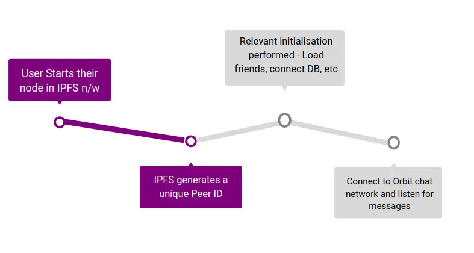
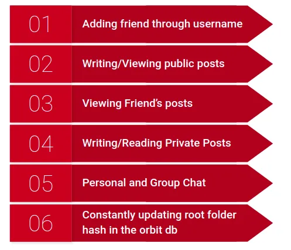

Team members
Mentors
- Aakash Singh
- Govardhan G D
- Deepak K
Mentees
- Krithik Vaidya
- Aditya Chirania
- Arnav Santosh Nair
Objectives
- Leverage the principles and capabilities of InterPlanetary File System(IPFS) to form the foundation of our Decentralized Social Network.
- Ensure that the user has complete control over their data, and that the data is securely distributed across nodes, without the presence of a single centralized server.
- Use the IPFS filesystem for storing user’s data
- Use the OrbitDB decentralized database for maintaining a database of users and their associated data on the network.
- Allow users to add and interact with friends.
- Provide a service to post content, either onto a timeline or to a particular user/group of users.
- Implement a Decentralized Chat service to allow messaging between users. Provide the functionality of group chats and private chats.
- Attempt the integration of cryptographic protocols to secure all communications.
- Make the web-app as user friendly as possible, by abstracting away the complexities of the underlying system from the end-user.
System Design/Architecture
When a user joins the decentralised social network, the following steps happen on their local system as shown in fig 1:
- On starting up the decentralised social network the user starts up their node in the IPFS network
- On starting up their node in the IPFS network a unique peer ID is generated which is used to identify each user
- After peer id is generated all the necessary information is loaded including connection to the database, posts and lists of friends
- Then the user connects to the Orbit chat network to listen for messages and enable messaging services

The various features of the decentralised social network are shown in Fig 2. The features can be classified into 3 broad categories - adding friends through usernames, viewing posts and chatting. The posts can be classified into 3 types - private,public and friends post. Private posts can be sent from 1 user to another exclusively without any external interference. Public posts can be viewed by anyone who searches the username of the desired user, and friends posts are broadcasted to all the users in the friends list of a user.

Methodology
InterPlanetary File System(IPFS)
IPFS is a P2P filesystem and stack of network protocols enabling file access and distribution on the decentralized web. The files on the decentralized web are not stored on servers, but are distributed amongst the nodes on the network, hence ensuring that there is no central authority controlling all the data. The files here can be anything – text files, images, video, entire folders containing any types of files, etc. Till date, over 5 trillion files have been hosted on the IPFS. Each unique piece of content is represented by a unique Content Identifier(CID), which is a hash of the content itself. All references within IPFS must be made using this CID itself i.e, using the hash of the content. Content is represented and stored in a Merkel DAG(Directed Acyclic Graph). Information of distribution of content is stored in Distributed Hash Tables, which the users can refer to each time they need to access anything. They must simply make a pair of p2p calls to the DHT, and are served with the information of locations of the desired content. As all content is distriuted among all users of the network, no one authoritative entity has control over all content. This improves security. Also, as all requests and responses are faster peer-to-peer ones, system latency is likely to be reduced.
Mutable File System(MFS)
Owing to the nature of Merkel DAGs(within which all content is representatively stored), by default content on IPFS is immutable i.e., once entered, it cannot be changed. However, erasing and re-entering content at each updation wouldn’t be economical. This is where MFS comes into play. It abstracts away all the underlying re-organization that must be done to Merkel DAGs during an updation operation, thus providing the user with a simple mutable Unix-like file system interface. Users can thus easily add, remove or modify content as needed, all further necessary operations are handled by MFS under the hood.
OrbitDB
It is a serverless, distributed, peer-to-peer database service that stores all information across its users, once again ensuring lower latency. Users can create their profile with any name of their choice, called a peerID. OrbitDB stores a mapping between their peerID and their root hash. Now, anytime a user’s name is referenced, the application pulls out the corresponding root hash and uses that for all further operations. A given user is represented as the root folder of its system, mirroring the Unix-like interface of MFS. The different types of content of a user(messages, timeline, etc.) are stored as folders within this root. The Merkel DAG used stores CIDs in its nodes, and each node’s hash is calculated based on its content and the hashes of its children. Thus, the root folder here will have a corresponding root hash within the Merkel DAG. Using this, any user on the system can navigate to another user’s folder and view their timeline, messages, etc. Messages are encrypted using a shared secret key set up between the participating entities, to ensure no one else can read those messages.
Owing to the fact that Merkel DAGs calculate the hashes upwards, any changes to the any content of a user will change their root hash. Thus, to find a user, one must have their most recent root hash. This is where OrbitDB comes into play. It stores a mapping between every user’s peerID and their root hash(updated each time there’s a change). Thus, users simply have to reference a user’s peerID, and OrbitDB will pull up their current root hash and provide it to IPFS.
Orbit Chat API
An api that enables chatting with the help of technologies like pubsub, ipfs and orbit db. This helps in decentralized chatting. Basically the api provides a provision for a user to listen on a particular channel name and anyone sending a message to this channel will be seen to the user. How we used it: What we have done here is that is that we have explicitly created channel names by appending the peerid of yours and and your friends in lexicographical order so there exists a unique channel name between you and your friend .This helps any two friends to chat on a unique channel . Another feature we have created is the ability to chat on a channel that you can decide yourself. This way multiple people / groups can indulge in chats.
Results
Click to play
The code for this project can be found in this GitHub repository.Applications
- Real-time decentralized chat application.
- Decentralized social media platform to post and view content of other users.
- Fast and secure alternative to the centralized versions prevalent in current times.